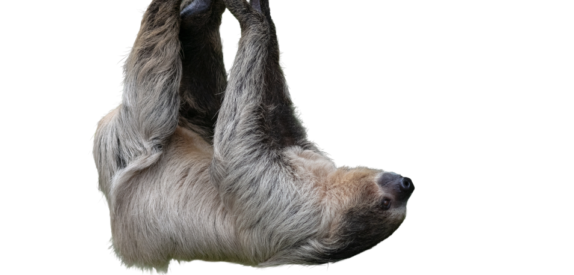
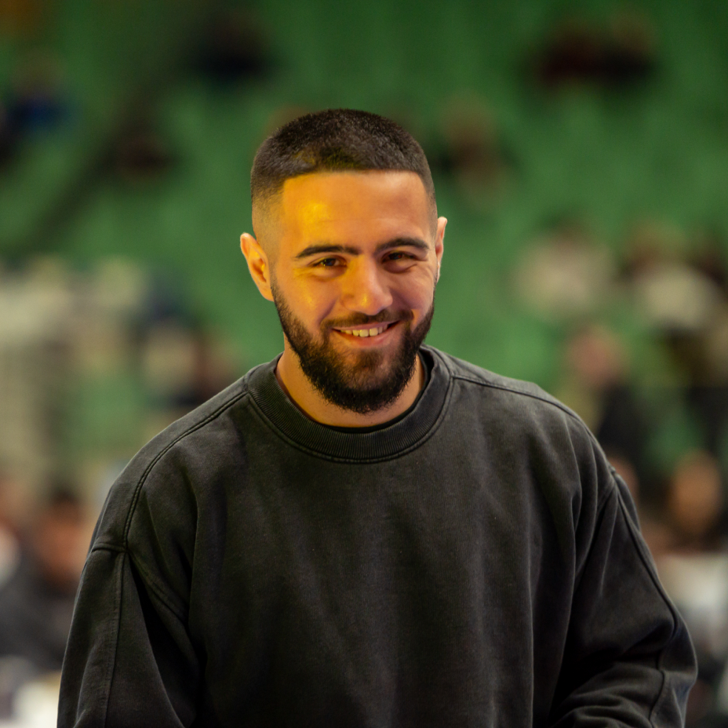
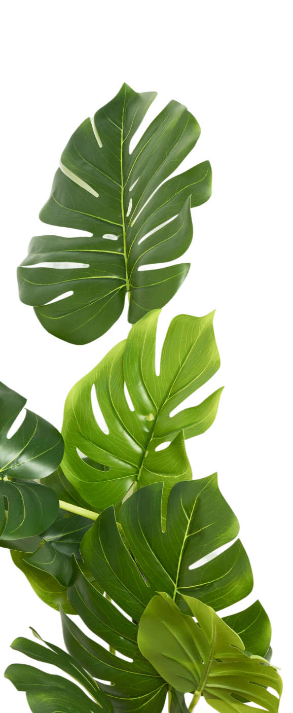

I began my journey in graphic design as a freelancer in a small town, creating logos, business cards, and a wide range of visual materials for local businesses. What started as small projects quickly became a true passion. Determined to improve, I immersed myself in learning - watching tutorials, attending online lectures, and completing courses to refine both my technical skills and creative thinking.
Eventually, I realized that my hometown could no longer offer the growth I was seeking. I moved to Sofia, where I landed my first official design position and expanded my experience across diverse projects and industries. There, I pushed my abilities further than I ever imagined possible - and as they say, there is still much of the story left to be written. But words can only say so much. This portfolio exists to show the results - work that speaks for itself. And yes i love animals.


"I design for brands that want to grow beyond ordinary.
Clear, confident, and built to stand out."
Every project starts with understanding. I turn ideas into visuals that communicate clearly and achieve real results.
Safe design is forgettable. I create work that is distinctive, confident, and impossible to ignore.
Design should connect, not just decorate. My goal is to build visuals that resonate with people and strengthen brands.
Great results come from strong partnerships. I work closely with clients to transform vision into reality.
My journey has been built on progress - stepping beyond comfort zones, embracing challenges, and continuously improving with every project.
Details define quality. I approach every project with precision, care, and high professional standards.